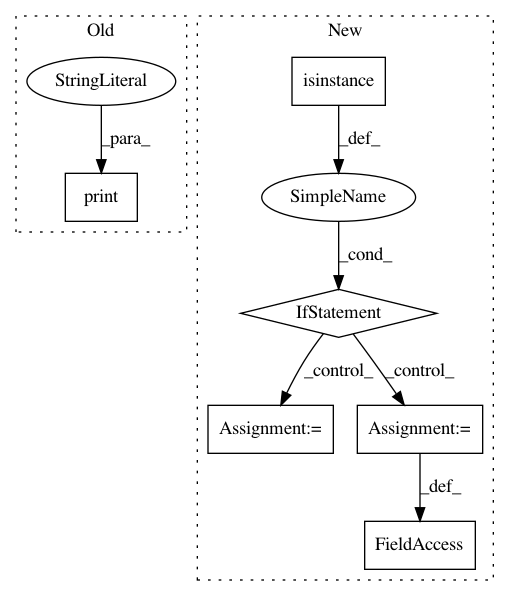

fb60018bc7bbb2edb19361cac6b052cd7e674bc2,layers/eight_mile/pytorch/serialize.py,,load_tlm_transformers_bin,#Any#Any#Any#Any#,305
Before Change
num_layers = len(pytorch_tlm.transformer.encoders)
mapped_keys = convert_transformers_keys(num_layers, d, replace_layers, replace_embeds)
unknown_keys = pytorch_tlm.load_state_dict(mapped_keys, strict=False)
print("Ignored ", unknown_keys)
After Change
// the usual LP embeddings with an added bias term set to weight 0
// Option 2: the user does care about token types and has provided a token type feature (presumed to be in the
// second key of the embeddings stack
if isinstance(pytorch_tlm.embeddings[k_0], LearnedPositionalLookupTableEmbeddingsWithBias):
old_embeddings_stack = pytorch_tlm.embeddings
// we need to temporarily monkey patch the embeddings to load them, and then we can reset them to what they were
d = {k_0: pytorch_tlm.embeddings[k_0], "tt": LookupTableEmbeddings(vsz=2, dsz=pytorch_tlm.transformer.output_dim)}
pytorch_tlm.embeddings = EmbeddingsStack(d)
unknown_keys = pytorch_tlm.load_state_dict(mapped_keys, strict=False)
if old_embeddings_stack:
old_embeddings_stack[k_0].bias = nn.Parameter(pytorch_tlm.embeddings["tt"].embeddings.weight[0])
pytorch_tlm.embeddings = old_embeddings_stack
In pattern: SUPERPATTERN
Frequency: 4
Non-data size: 6
Instances
Project Name: dpressel/mead-baseline
Commit Name: fb60018bc7bbb2edb19361cac6b052cd7e674bc2
Time: 2020-04-20
Author: dpressel@gmail.com
File Name: layers/eight_mile/pytorch/serialize.py
Class Name:
Method Name: load_tlm_transformers_bin
Project Name: ClimbsRocks/auto_ml
Commit Name: b1756fd255d0f921cd30537d55d0dfb2a6c8ad32
Time: 2017-04-17
Author: ClimbsBytes@gmail.com
File Name: auto_ml/utils_models.py
Class Name:
Method Name: load_ml_model
Project Name: scikit-multiflow/scikit-multiflow
Commit Name: 910fa62605de49dea3e4599bb233c3d9c6f4527b
Time: 2019-12-09
Author: saulomastelini@gmail.com
File Name: src/skmultiflow/trees/nodes/ada_split_node_for_regression.py
Class Name: AdaSplitNodeForRegression
Method Name: learn_from_instance
Project Name: analysiscenter/batchflow
Commit Name: cf56b1024458f7ebc9a77c42457a9c192069bd49
Time: 2019-11-17
Author: Tsimfer.SA@gazprom-neft.ru
File Name: batchflow/models/eager_torch/base.py
Class Name: EagerTorch
Method Name: train